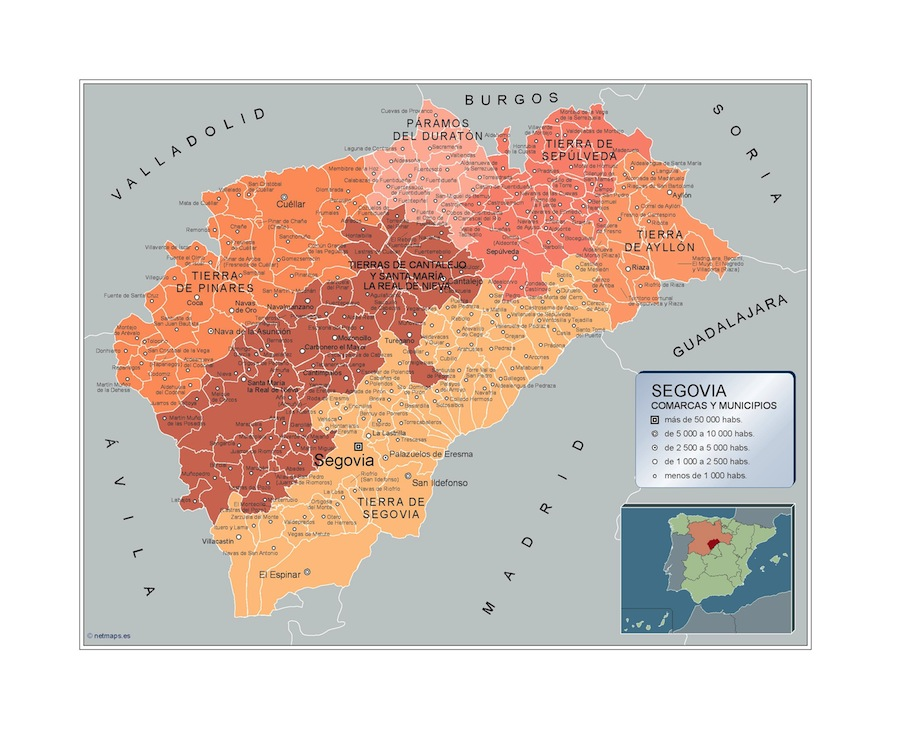
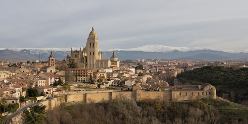
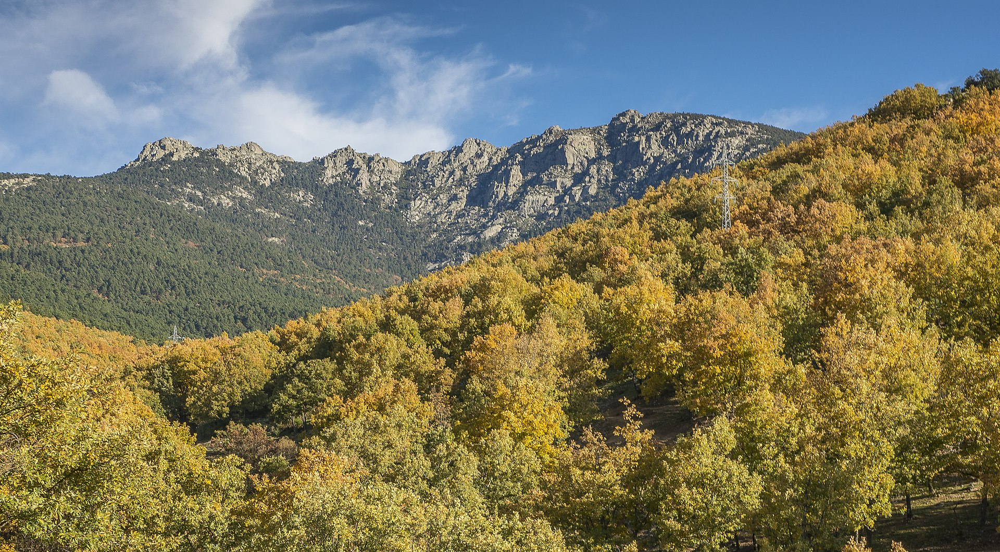
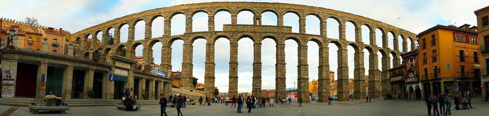
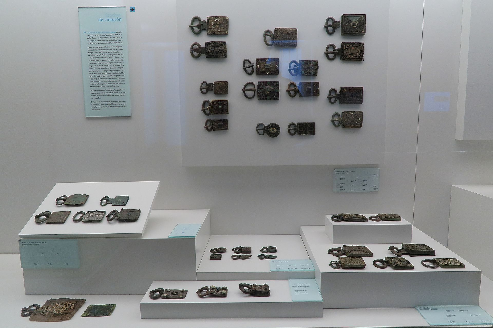
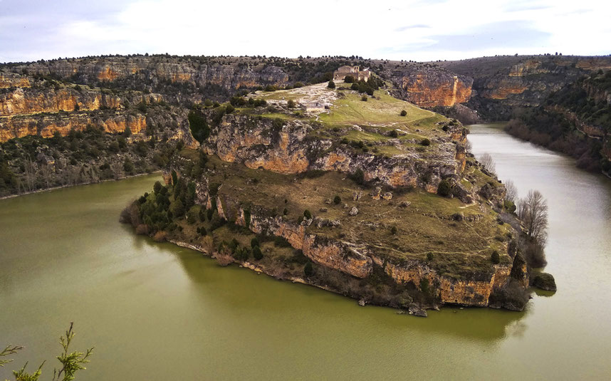
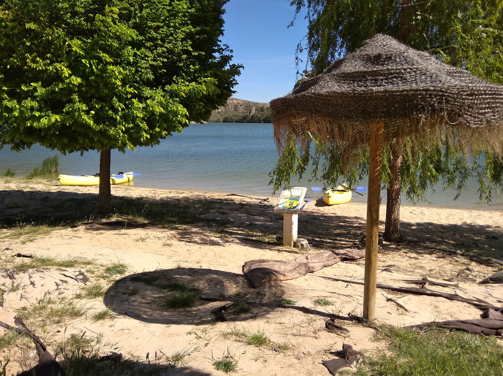
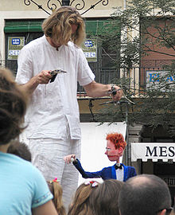
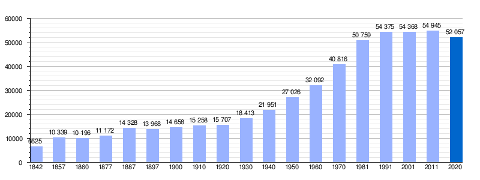

Ir a Zamora
Ir a Salamanca
Ir a leon
Ir a Valladolid
Ir a Palencia
Ir a Burgos
Ir a Soria
Ir a Ávila
LOCALIZACIÓN
Segovia se halla situada en el interior de la península ibérica, inmediatamente al norte de la sierra de Guadarrama, en la base de las montañas y al sur de la Submeseta Norte. El centro de la ciudad se encuentra a una altitud de 1002 metros sobre el nivel del mar, mientras que la altitud del municipio varía entre los 880 metros en el último tramo en el municipio del río Eresma, en el norte del mismo, y los 1400 metros en el cerro de la Cachiporra, al sur del municipio. En Segovia comienza el Camino de San Frutos que finaliza a 80 km en la ermita de San Frutos. Esta localidad forma parte de la ruta principal del Camino de Santiago de Madrid.
VOLVER ARRIBA
LOCALIDADES PRINCIPALES
A cotinuación se muestra un mapa interactivo de la provincia de Segovia. Si clicamos en los nombres nos redirigira a la web oficial de cada zona 
VOLVER ARRIBA
GEOGRAFÍA
Segovia se halla situada en el interior de la península ibérica, inmediatamente al norte de la sierra de Guadarrama, en la base de las montañas y al sur de la Submeseta Norte. El centro de la ciudad se encuentra a una altitud de 1002 metros sobre el nivel del mar,1 mientras que la altitud del municipio varía entre los 880 metros en el último tramo en el municipio del río Eresma, en el norte del mismo, y los 1400 metros en el cerro de la Cachiporra, al sur del municipio. Esta localidad forma parte de la ruta principal del Camino de Santiago de Madrid.

PICO MÁS ALTO
Siete Picos
Los Siete Picos es una formación montañosa de la sierra de Guadarrama, en el sistema Central de la península ibérica, situada en el límite entre las provincias españolas de Madrid y Segovia. El pico más elevado de los siete que componen el macizo, en el que se erige el vértice geodésico, tiene una altitud de 2138 metros sobre el nivel del mar.
source:https://es.wikipedia.org/wiki/Siete_Picos#/media/Archivo:Siete_Picos_Walk
{kind=link}
VOLVER ARRIBA
HISTORIA
El poblamiento humano en el entorno de lo que hoy es Segovia se remonta a hace unos 50 000 años, fecha en que ha sido datada la ocupación neandertal de los yacimientos del Abrigo del Molino y el Abrigo de San Lázaro, en el valle del Eresma, a tan solo 500 m del emplazamiento del alcázar. Fueron pues, los neandertales, los primeros en ocupar el territorio de lo que con el tiempo se convirtió en la ciudad de Segovia.
Cerca de este abrigo, en la cueva de la Tarascona y en otros emplazamientos al aire libre en el entorno periurbano de Segovia, se localizan evidencias del Calcolítico y la Edad del Bronce. En el lugar que hoy ocupa el alcázar existía un castro celtíbero, del que se conocen algunas evidencias, como su posible foso. Durante la época romana, Segovia pertenecía al convento jurídico de Clunia. En la Hispania visigoda fue sede episcopal de la Iglesia católica, sufragánea de la Archidiócesis de Toledo que comprendía la antigua provincia romana de Cartaginense en la diócesis de Hispania.

Se cree que la ciudad fue abandonada tras la invasión islámica. Tras la conquista de Toledo por Alfonso VI de León, el yerno del rey Alfonso VI, el conde Raimundo de Borgoña, junto con el primer obispo de su reconstituida diócesis, empezó la repoblación de Segovia en 1088 con cristianos procedentes del norte de la península y de más allá de los Pirineos, dotándola de un amplio concejo cuyas tierras cruzaban la sierra de Guadarrama e incluso la línea del Tajo.
Durante el siglo xii sufrió importantes disturbios en contra de su gobernador, Álvar Fáñez, y posteriormente como parte de las luchas del reinado de Urraca de Castilla. A pesar de estos desórdenes, su situación en las rutas de la trashumancia la convirtió en un importante centro del comercio de la lana y de las manufacturas textiles (cuya existencia está documentada desde el siglo xii). El final de la Edad Media es una época de esplendor, en la que acoge una importante aljama hebrea; sienta las bases de una poderosa industria pañera; desarrolla una espléndida arquitectura gótica y es corte de los reyes de la Casa de Trastámara (ya Alfonso X el Sabio había acondicionado el alcázar como residencia real). Finalmente, en la iglesia de San Miguel de Segovia Isabel la Católica es proclamada reina de Castilla el 13 de diciembre de 1474.
En el siguiente video nos explicaran algo más de la historia de Segovia.
VOLVER ARRIBA
CULTURA
Museos
Estos son alguinos de los musesos más relevantes de Segovia:
- Museo Gastronómico de Segovia
- Museo de Segovia.
- Museo de Arte Contemporáneo Esteban Vicente
- Museo del Palacio Episcopal.
- Museo de la Academia de Artillería.
- Casa-Museo de Machado.
- Real Casa de Moneda.
Gastronomia
Las tierras de la provincia aportan diversos productos, comenzando por el alimento más popular, el pan, o la leche, base de los quesos de la provincia de Segovia. El tierno lechazo asado o el cochinillo son parte de la oferta de carnes de los restaurantes de la capital, completada por los diversos productos obtenidos de la matanza del cerdo, ritual este que todavía se celebra en los pueblos de la provincia durante los meses más fríos.
Entre los postres pueden encontrarse rosquillas, soplillos, florones, hojuelas, tortas y, sobre todo, el ponche segoviano, de cremoso interior y tostada apariencia. Entre los vinos existen algunos producidos en la provincia como los Blancos de Nieva o los Tintos de Valtiendas.
VOLVER ARRIBA
NATURALEZA
La provincia de Segovia ofrece a los amantes de la naturaleza unos grandes espacios naturales y áreas recreativas. A las extensas llanuras cerealísticas, típicas de los campos castellanos, se suman los grandes pinares, los paisajes serranos formados por pastos, encinas y pinos o las frescas riberas de los ríos, perfiladas por choperas o escarpados acantilados formados por la erosión del agua y el paso de los años. Parques Naturales como las Hoces del Duratón o las Hoces del Riaza, el Parque Nacional de Guadarrama o la Sierra de Ayllón, son garantías suficientes para conseguir un buen plan natural con éxito. Además, también lugares perfectos para la realización de senderismo, rutas cortas o largas, para todos los gustos.
HOCES DEL RÍO DURATÓN
El Parque Natural de las Hoces del río Duratón se declaró como tal en 1989 y está constituido por el tramo del Río Duratón que discurre entre Sepúlveda y la presa de Burgomillodo, pasando por los municipios de Carrascal del Río y Sebúlcor.
Los 25 km de recorrido que compone las Hoces, han ido excavando la roca caliza, creando profundas paredes de hasta 70m. de altura, formando meandros.
EMBALSE DE LAS VENCÍAS EN SEGOVIA
El embalse de las Vencías se encuentra al norte de la provincia de Segovia, en el paraje denominado La Serranilla, en un gran cañón entre las localidades de San Miguel de Bernuy y Fuentidueña, en el río Duratón.
Es un magnífico entorno natural perfecto para la realización de turismo activo. En el embalse se puede bañar, realizar piragüismo, pesca, senderismo o comer bien en alguno de sus chiringuitos.

VOLVER ARRIBA
TRADICIONES
Fiesta de la Virgen de la Fuencisla (25 de septiembre), patrona de Segovia. El día de la mayor celebración es el último domingo del mes. Dos jueves antes la Virgen sube desde su santuario en la alameda de la Fuencisla a la catedral para empezar la novena. Durante los nueve días siguientes se celebra la novena en la catedral, en la que se canta el himno de la Fuencisla, y el último domingo del mes la Virgen vuelve a su santuario. Puesto que la Virgen es capitán general de Artillería (lo cual viene indicado por el bastón de mando y el fajín que tiene a sus pies) desde el 24 de septiembre de 1916, en sus viajes entre el santuario y la catedral va acompañada por los cadetes de la Academia de Artillería y por la banda de música. El día que vuelve al santuario va acompañada por los cadetes hasta la plaza del Azoguejo, donde se canta una salve. Hasta hace unos años había exhibiciones de jotas castellanas en la alameda de la Fuencisla a la llegada de la Virgen; últimamente las jotas se bailan en el propio Azoguejo.
Anualmente, cada mes de septiembre, se celebra en la Real Academia de Historia y Arte de San Quirce el Seminario de Historia Medieval organizado por la Universidad Nacional de Educación a Distancia.
En lo relativo a festivales artísticos, se celebran Titirimundi, HAY festival, Semana de Música Sacra, la Muestra de Cine Europeo de Segovia (MUCES), Folk Segovia, Festival de Segovia, Festival Internacional de Danzas de la ESTEVA y la Carrera del Pavo.
Títere en el festival de Titirimundi. Aqui un video sobre el Titirimundi
VOLVER ARRIBA
OTROS ASPECTOS
Demografía
El crecimiento de la población experimentado a lo largo del siglo xix se aceleró a partir de 1920: 16 013 habitantes ese año, 33 360 en 1960, 53 237 en 1981. A partir de la década de 1980 el crecimiento se ralentiza notablemente: 55 586 en 2004 y 56 047 en 2007.
VOLVER ARRIBA